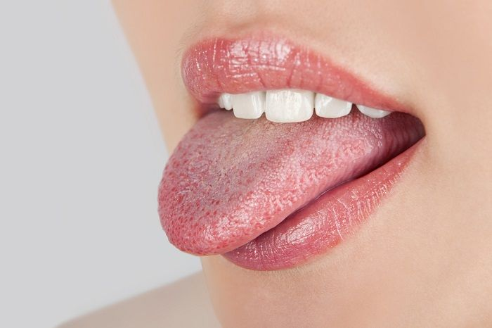

La candidiasis oral es una infección causada por un hongo llamado Candida. Este hongo puede crecer dentro de la boca cuando no existe un buen equilibrio de microorganismos.
La candidiasis puede aparecer en la lengua, las encías o la parte interna de las mejillas.
Generalmente se observa como manchas blancas o zonas enrojecidas dentro de la boca.
Síntomas
* manchas blancas en la boca;
* ardor o molestias;
* enrojecimiento;
* dificultad para comer algunos alimentos;
* sensación incómoda en la boca.
¿Cómo prevenirla?
* mantener una buena higiene bucal;
* cepillarse correctamente;
* no compartir cepillos de dientes;
* visitar al odontólogo;
* cuidar la salud bucal diariamente.
Información importante
En nuestra boca viven muchos microorganismos. Cuando ese equilibrio cambia, algunos hongos pueden crecer demasiado y provocar infecciones.
Por eso es importante mantener hábitos saludables y cuidar la higiene todos los días.
